Now that you have cleaned, organized, and analyzed the data, the next step is to share the findings and insights with the audience, raising their attention to the study. Rows and columns of numbers may not be palatable to most people. To help the audience unpack the message embedded in the data, a graph is recommended. In this chapter, we will discuss various types of graphs, what they are good at and not so good at, and how to make them in R using two different graphical systems.
Learning Objectives:
After finishing this chapter, you should be able to:
Choose the most appropriate graph based on the number of variables and their types.
Convey the message you want to convey to the audience embedded in the data through graphs.
Decorate graphs with labels, a main title, color, and other graphical attributes using the base R graphical system.
Create publication-quality graphs using the ggplot2 package.
3.1 Types of Graphs
The best way to choose the most appropriate graph depends on the data. Specifically, the types of variables (numeric or categorical) and how many of them there are. Here, you will plot graphs that entail:
One numeric variable.
One categorical variable.
One categorical variable and one numeric variable.
Two or more numeric variables.
A summary table.
3.2 Base R Graphics
This graphical system is built into base R; no additional package is required. It is simple, ideal for creating graphs promptly for prototyping purposes and getting the job done. The flip side is that the graphs may be bare-bones and unrefined. Some features are hard to implement. There is no one graphical system for all data visualization tasks. It is highly recommended to master both systems. Let’s dive into each graph one by one.
3.2.1 One Numeric Variable
If you want to examine the distribution of a numeric variable (such as the spread, peak(s), symmetry, and flatness), a histogram is the choice. On the other hand, if your concern is robust statistics (median, outliers, etc.), a box plot will do the job. Let’s start with plotting a histogram.
3.2.1.1 Histogram
Let’s examine the distribution of iris’s Sepal.Width, a numeric variable, using a histogram. Below are the codes for creating four histograms that display the same information but with different refinements.
par(mfrow=c(2,2))# Top lefthist(iris$Sepal.Width)# Top righthist(iris$Sepal.Width,xlab="Sepal Width",ylab ="Count",main ="Histogram of Sepal Width")# Bottom lefthist(iris$Sepal.Width,col ='skyblue', border ='white', xlab="Sepal Width", ylab ="Count", main ="Color options")# Bottom righthist(iris$Sepal.Width, breaks =seq(2,4.5,by=0.1), col ='skyblue', border ='white', xlab="Sepal Width", ylab ="Count", main ="breaks option")
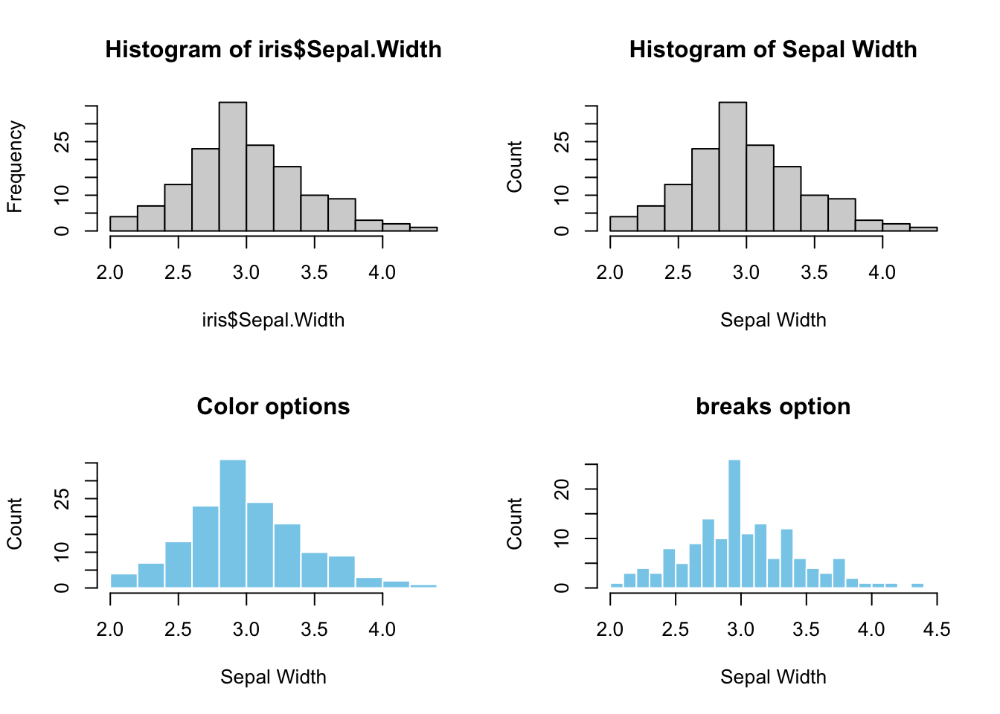
Figure 3.1: Base R Histogram. Top left: default. Top right: Customized X-Y labels and the main title. Bottom left: change color of bars and border. Bottom right: change the bin width (breaks=)
For the bottom-right graph, check out this line: breaks = seq(2,4.5,by=0.1). The aim is to customize the bar widths. The seq() function (Section 1.4.3) generates a list of numbers (2.0, 2.1 ... 4.4, 4.5) that represents the x-ticks.
Note: par(mfrow=c(2,2)) splits the plotting area into a 2x2 grid such that multiple graphs can be displayed together. If your plot contains only one graph, it can be ignored.
3.2.1.2 Box Plot
If robust statistics of the data are the key message, the most appropriate graph is a box plot. In a box plot, the y-axis represents the numeric variable, and the x-axis has no meaning.
par(mfrow=c(2,2))# Top leftboxplot(iris$Sepal.Width)# Top rightboxplot(iris$Sepal.Width,ylab="Sepal Width",main="Box plot of Sepal Width")# Bottom leftboxplot(iris$Sepal.Width,col ="skyblue",ylab="Sepal Width",outcol ='red',outpch =19,main="Color options")# Bottom rightboxplot(iris$Sepal.Width, horizontal =TRUE, xlab="Sepal Width", main="Horizontal Box plot")
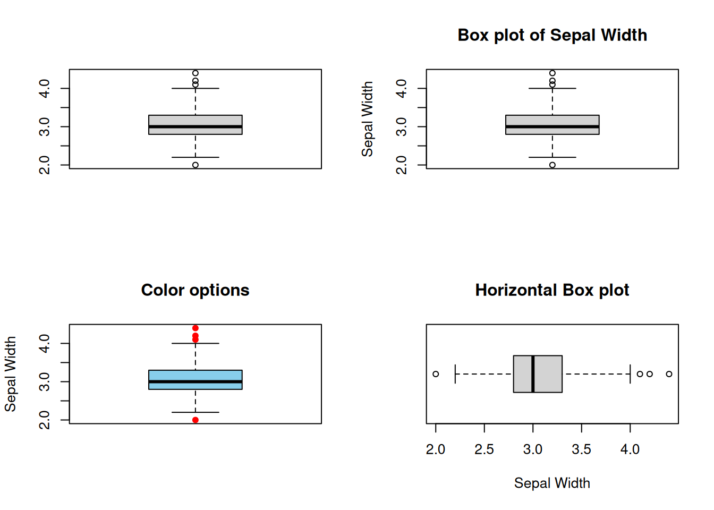
Figure 3.2: Base R Box plot. Top left: Default, Top right: labels and main title. Bottom left: color options. Bottom right: horizontal = TRUE
As a practice, data points above the upper whisker or below the lower whiskers are labeled as outliers.
While a box plot summarizes data into quartiles, a histogram portrays the underlying distribution—such as peaks and symmetry—that is otherwise difficult to spot. Is it a great idea to combine the best of both plots in a single graph? To ensure the combined plot makes sense, we need to make sure the axes of the two plots are in the same range. Here’s an example below:
par(mfrow=c(2,1))hist(iris$Sepal.Width, breaks =seq(2,4.5,by=0.1), col ='skyblue', border ='white', xlim =c(2,4.5),xlab ="",ylab ="Count", main ="Stacking Up Graphs")boxplot(iris$Sepal.Width, horizontal =TRUE, ylim =c(2,4.5),xlab="Sepal Width", main="")
Figure 3.4: Stacking up a histogram and a box plot.
The ylim of the histogram and the xlim= of the box plot are the specific parameters used to align the two graphs on the same scale.
Figure 3.4 illustrates the added advantage of combining graphs. The peak in the histogram is almost perfectly aligned with the median shown in the box plot, suggesting the data distribution is nearly symmetric. Additionally, the outliers, hardly visible in the histogram, can easily be spotted in the box plot. This example demonstrates the 1+1>2 offered by combining different types of graphs, and the technique used to implement it.
3.2.2 One Categorical Variable
When it comes to categorical variables, we are usually interested in the number of samples that fall in each category. As discussed in Chapter 2, the tallying can be done using the table() function (Section 2.1.8) or group_by() followed by summarize(n=n()) (Section 2.3.11).
3.2.2.1 Bar Plot
Bar plot is the standard choice for visualizing tallied data. The only input to R’s barplot() graph function is a tabulated count of the categorical variable. Here’s an example:
Figure 3.5: A simple bar plot. Top left: Default. Top right: with tables
Sometimes you might want to reorder the categories along the x- or y-axis. By default, barplot() places the bars from left to right according to the order of the levels. E.g., show the levels of iris$Species by:
levels(iris$Species)
[1] "setosa" "versicolor" "virginica"
You can change the order of the levels by updating the factor variable using the factor() function (Section 1.2.4). Suppose the desired order is virginica, setosa, and veriscolor. Here’s the code:
par(mfrow=c(2,2))# Top leftpie(with(iris, table(Species)))# Top rightpie(with(iris, table(Species)), col =c('skyblue', 'orange', 'white'), main="Species")# Bottom leftcounts <-with(iris, table(Species))my_labs <-paste0(names(counts),"(",counts,")")pie(counts, labels = my_labs, col =c('skyblue', 'orange', 'white'), main ="Species Counts")# Bottom rightcounts <-with(iris, table(Species))fractions <-round(counts/sum(counts),2)my_labs <-paste0(names(counts),"(",fractions,")")pie(counts, labels = my_labs, col =c('skyblue', 'orange', 'white'), main ="Species Fractions")
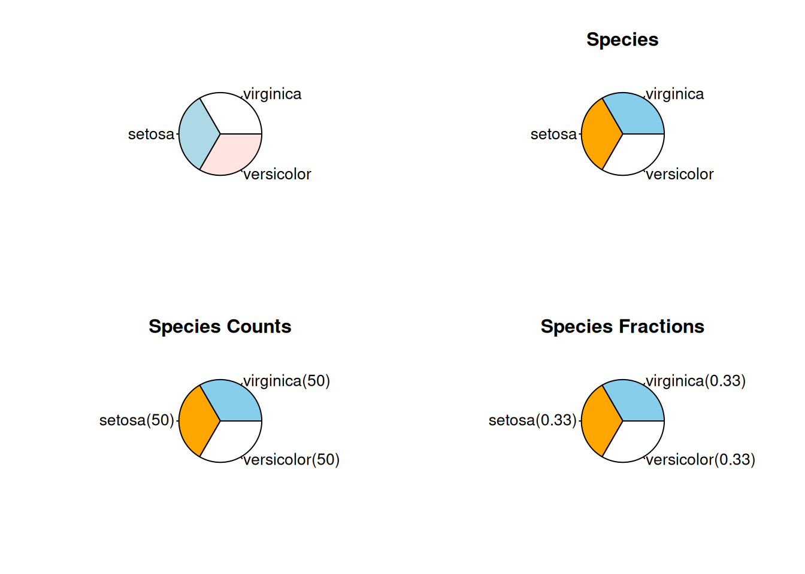
Figure 3.7: A simple pie chart. Top left: Default. Top right: with tables. Bottom left: Add a title. Show count for each category. Bottom right: Add a fraction or proportion for each category.
3.2.3 One Categorical Variable and One Numeric Variable
The categorical variable in this situation usually serves as a group identifier that splits the data into groups so the numerical variable can be compared between groups. This kind of graph is generally named a side-by-side plot. You can choose a side-by-side box plot or a side-by-side bar plot. For example, a side-by-side box plot that visually compares the robust statistics of Sepal.Length between different species of iris.
Sepal.Length ~ Species is read as “Sepal length by species”, the tilde symbol “~” means “by”.
However, there is a glitch in the horizontal box plot (bottom): the y-labels collide. It can be fixed by:
Expand the left margin of the plotting area.
Add the las=2 parameter to the boxplot() function, and turn off the default ylab=.
Manually add the y-label.
# Expand the left margin so the text doesn't truncate# The numbers correspond to margins: c(bottom, left, top, right)# Default is c(5, 4, 4, 2). We are increasing the left margin from 4 to 7. par(mar =c(5, 7, 4, 2) +0.1)# Draw the plot, but explicitly tell R NOT to draw the y-axis label yetboxplot(Sepal.Length ~ Species,data=iris, horizontal =TRUE,las =2,ylab ="", # This suppresses the default colliding labelmain="Y-tick Labels Reorientated")# Add the y-axis label manually, pushing it further away from the axis# The 'line' argument controls how many text lines away from the axis it sitstitle(ylab ="Species", line =5)
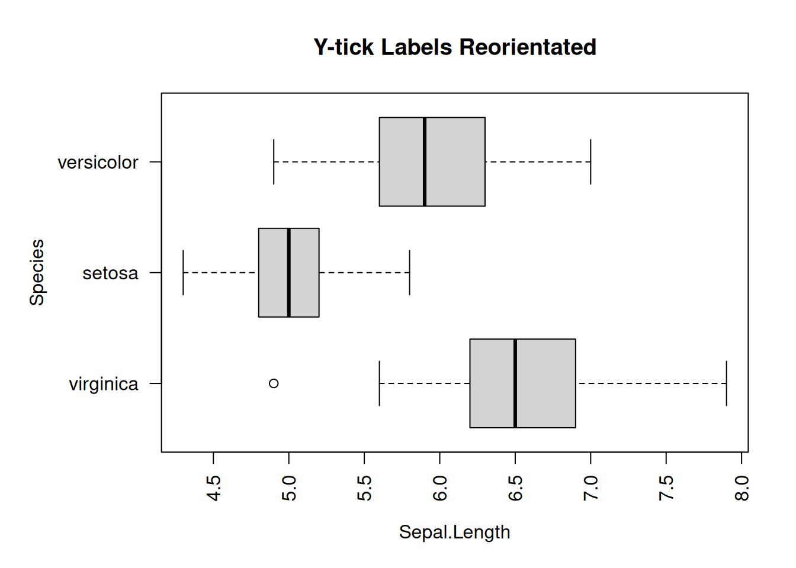
Figure 3.9: A Side-by-Side Box Plot with Horizontal Y-Labels
3.2.3.2 Side-by-side Bar Plot
Suppose you want to compare the average sepal length among different iris species visually. You will begin to feel the cumbersome nature of base R, and appreciate the power of tidyverse. Anyway, you will see how to make such a graph with a new function, tapply(), in two steps.
First, make a table of average sepal length by species. Apparently, the table() function may help. But it does not work for this case, as it only tallies the number of samples by species. Hence, you need to use a new function tapply(). Here’s an example:
mean_data <-tapply(iris$Sepal.Length, iris$Species, FUN = mean)mean_data
virginica setosa versicolor
6.588 5.006 5.936
How does tapply() work? The “t” represents a table. The function applies the mean function to the input data iris$Sepal.Length grouped by iris$Species. In other words, the mean() is applied to the sepal lengths for each species separately.
This topic is slightly advanced. It is much easier to use ggplot2. So, feel free to skip this or jump to Section 3.4.4.3.
The error bar represents the standard error of the mean (SEM). Here is the formula:
\[\huge{\bar{x}\pm\frac{s}{\sqrt{n}}}\] , where \(s\) and \(n\) are the standard deviation and sample size, respectively. In the bar plot you are going to plot, the height of the bar is \(\bar{x}\), and the error bars span above and below the bar’s top by \(\frac{s}{\sqrt{n}}\) units.
First, calculate the mean and standard error using the tapply() function.
mean_data <-tapply(iris$Sepal.Length, iris$Species, FUN = mean)mean_data
virginica setosa versicolor
6.588 5.006 5.936
sem <-function(x) {sd(x)/sqrt(length(x))}sem_data <-tapply(iris$Sepal.Length, iris$Species, FUN = sem)sem_data
First, create the bar plot and store the height of bars in the object bar_midpoints. Use the arrows() function to create/add the error bars to the bar plot, where each error bar consists of the upper whisker \((x_{1}, y_{1})\) and lower whisker \((x_{0}, y_{0})\).
bar_midpoints <-barplot(mean_data,xlab="Species", ylab="Average Sepal.Length", main="Side-by-side Barplot")arrows(x0 = bar_midpoints,y0 = mean_data - sem_data, # Start of the barx1 = bar_midpoints,y1 = mean_data + sem_data, # End of the barangle =90, # Makes the ends of the bars flatcode =3, # Draws ticks at both endslength =0.5, col='red') # Sets the length of the ticks
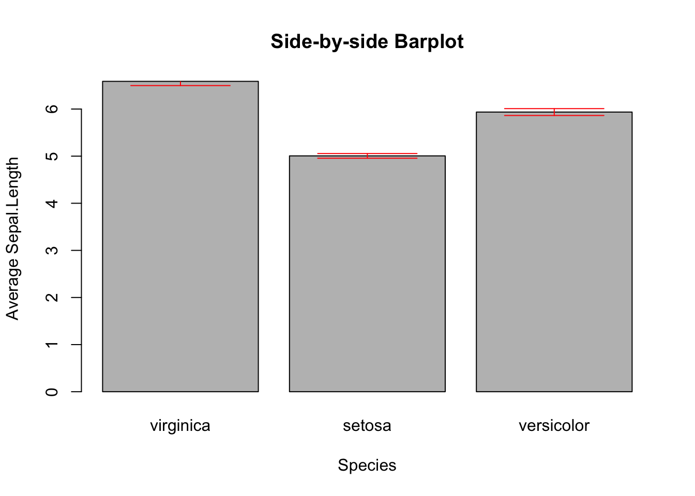
Figure 3.11: A Side-by-side Bar Plot with Error Bars
Once again, if you found this confusing, see the ggplot version of error bars (Section 3.4.4.3).
3.2.3.4 Line Graph with Error Bar
If your message is to show a trend from left to right, a line graph is the default choice. Here is an example to create a line graph with solid dots.
# Default line plotplot(mean_data,type='b',pch=19,xlab="Species",ylab="Average Sepal.Length",main="A Line Plot")
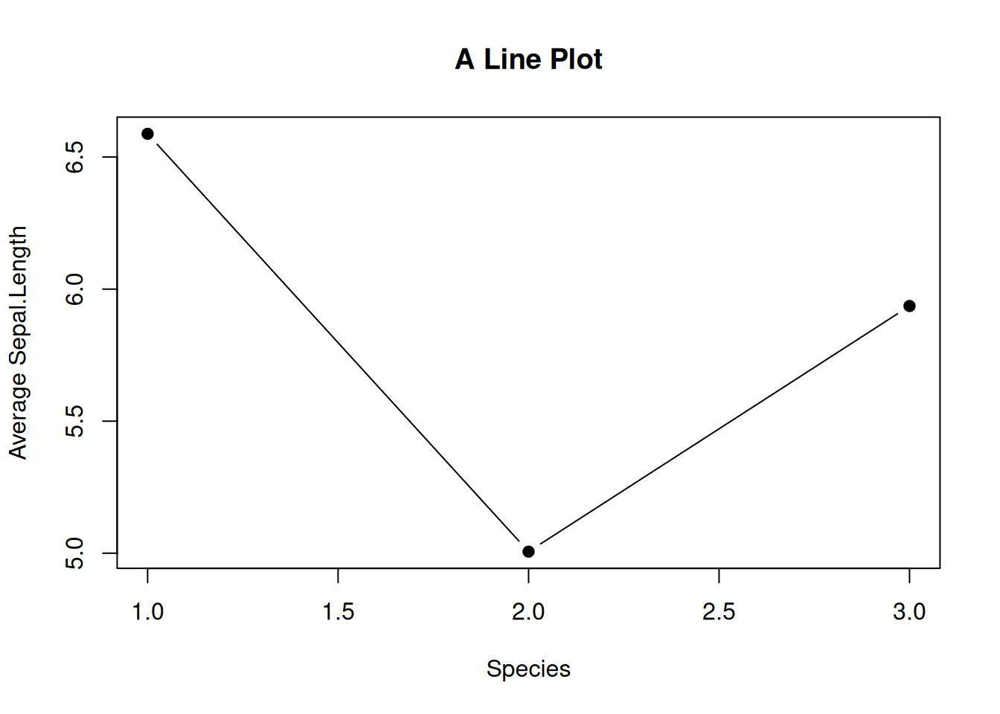
Figure 3.12: A Line Plot
Use pch=19 to specify the shape of the data points. pch stands for plotting character. The value 19 denotes a solid dot (\(\bullet\)).
To join the dots together in a line plot, specify type='b', the b means both dots and line are plotted. More options of type can be found using the help function: help(plot) documentation.
But there is a glitch in the x-tick. The x-tick should show the actual species names instead of numbers. It can be fixed in two steps: 1. Suppress the default x-tick labeling feature of the plot() function by setting the parameter xaxt="n". And then, paste the customized x-tick back with the axis() function. The species names can be obtained by names(mean_data).
Figure 3.13: A Line plot with proper x-tick labels
Now we can add error bars to the line plot. It is similar to the bar plot above, except that x0 and x1 should take the values 1,2,3.
# Add Error Barplot(mean_data,type='b',pch=19,xlab="Species", ylab="Average Sepal.Length", main="Change x-tick Labels",xaxt="n")axis(side=1, at=1:length(mean_data), labels=names(mean_data))arrows(x0 =seq(length(mean_data)),y0 = mean_data - sem_data, # Start of the barx1 =seq(length(mean_data)),y1 = mean_data + sem_data, # End of the barangle =90, # Makes the ends of the bars flatcode =3, # Draws ticks at both endslength =0.05, col='red') # Sets the length of the ticks
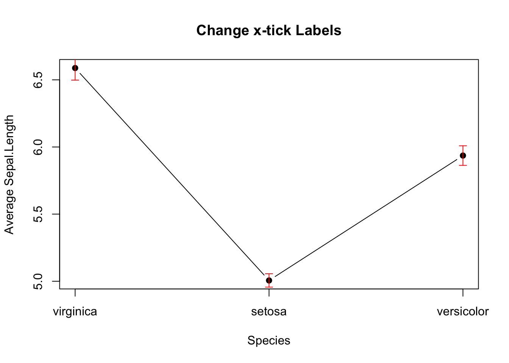
Figure 3.14: A Line plot with Error Bars
3.2.3.5 Overlapping Histogram
The code for creating this plot can be convoluted. It is easier to make it using ggplot2. Feel free to skip to Section 3.4.4.5.
Suppose you are interested in visualizing and comparing the distribution of sepal lengths among the three iris species. Here are the steps to do it:
Split the data by individual species.
Calculate the range for the x- and y-axis to ensure the histograms are on the same scale.
Create a histogram in certain color for a species from step 1, and use it as a template.
Overlay the histograms from other species on top of each other.
Let’s do it step by step below:
# Step 1: Split the data by individual speciessetosa <-subset(iris, Species =="setosa")versicolor <-subset(iris, Species =="versicolor")virginica <-subset(iris, Species =="virginica")
# Step 2: Set up the range for the x- and y-axisx_range <-range(iris$Sepal.Length)y_range <-c(0, 25) # 25 is arbitrary.
Below is the code for plotting the template histogram and adding histograms to it. To distinguish species, different colors are attributed to different species. It is done by col = rgb(...). The rgb() function stands for red, green, and blue. It takes four parameters: the intensity of red, green, blue, and transparency. All are in the range of 0 and 1. E.g., rgb(1, 0, 0, 0.5) means 100% red, no green and blue at all, and transparency is 50%.
# Step 3: Create a templatehist(setosa$Sepal.Length,main ="Overlapping Histogram of Sepal Length",xlab ="Sepal Length",col =rgb(1, 0, 0, 0.5), # Red with 50% transparencybreaks =seq(4,9,by=0.25),xlim = x_range,ylim = y_range)# Step 4: Overlay histograms from other specieshist(versicolor$Sepal.Length, col=rgb(0, 1, 0, 0.5), add =TRUE) # green with 50% transparencyhist(virginica$Sepal.Length, col=rgb(0, 0, 1, 0.5), add =TRUE) # blue with 50% transparency
Figure 3.15: Overlapping histograms
3.2.4 Contingency Table
Here we deal with a data set that comprises two categorical variables. A two-dimensional contingency table is used to tally the number of samples for different combinations of categories of the two categorical variables.
The distribution of the counts can reveal whether or not the two categorical variables are dependent. To illustrate how to visualize a contingency table, we will use the built-in data set penguins. The data set contains two categorical variables: species and island.
summary(penguins)
species island bill_len bill_dep
Adelie :152 Biscoe :168 Min. :32.10 Min. :13.10
Chinstrap: 68 Dream :124 1st Qu.:39.23 1st Qu.:15.60
Gentoo :124 Torgersen: 52 Median :44.45 Median :17.30
Mean :43.92 Mean :17.15
3rd Qu.:48.50 3rd Qu.:18.70
Max. :59.60 Max. :21.50
NAs :2 NAs :2
flipper_len body_mass sex year
Min. :172.0 Min. :2700 female:165 Min. :2007
1st Qu.:190.0 1st Qu.:3550 male :168 1st Qu.:2007
Median :197.0 Median :4050 NAs : 11 Median :2008
Mean :200.9 Mean :4202 Mean :2008
3rd Qu.:213.0 3rd Qu.:4750 3rd Qu.:2009
Max. :231.0 Max. :6300 Max. :2009
NAs :2 NAs :2
Suppose you are interested in exploring whether or not different species have shown preference in habitat or geographical location (island).
island
species Biscoe Dream Torgersen
Adelie 44 56 52
Chinstrap 0 68 0
Gentoo 124 0 0
Obviously, species and island are not independent, as you can see not all three species are present in all islands. If species and island are independent, the counts in the contingency table should be below:
indep_tab
island
species Biscoe Dream Torgersen
Adelie 74 55 23
Chinstrap 33 25 10
Gentoo 61 45 19
Two popular graphs are suitable for visualizing a contingency table: a side-by-side bar plot, or a mosaic plot.
par(mfrow=c(3,1))barplot(mytab,beside=T,xlab ="Island",ylab ="Count",main ="A 2D Table",col =c("skyblue", "lightgreen", "lightcoral"),legend.text =rownames(mytab))mosaicplot(mytab, main ="Mosaic Plot of Two Dependent Variables")mosaicplot(indep_tab, main ="Mosaic Plot of Two Independent Variables")
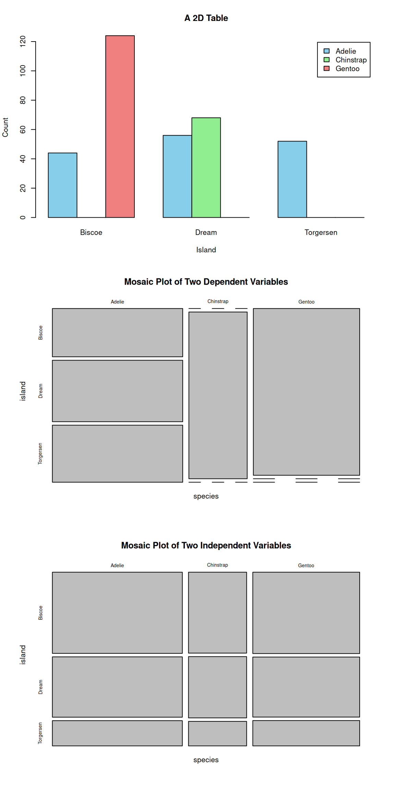
Figure 3.16: Visualization of a 2D Contingency Table. Top. A side-by-side barplot. Middle. Mosaic plot. Bottom. Mosaic plot for independent categorical variables
3.2.5 Two Numeric Variables
A scatter plot is the default choice to visualize the relationship between two numeric variables. The relationship can be manifold, ranging from linear to cyclical. So, visualizing how the data points are distributed in a 2D plane is an intuitive way to learn about their relationship. Importantly, visualization should be done before performing any statistical analysis, e.g., linear regression. Here is how to create a scatter plot that shows the relationship between sepal width and sepal length. Note that each point \((x_{i},y_{i})\) is a pair of values from one sample.
par(mfrow=c(1,2))# Top leftplot(x=iris$Sepal.Width,y=iris$Sepal.Length,xlab ="Sepal Width",ylab ="Sepal Length",main ="Default")# Top rightplot(x=iris$Sepal.Width,y=iris$Sepal.Length,pch=3,xlab ="Sepal Width",ylab ="Sepal Length",main ="Change the Point Style")
Figure 3.17: Visualizing the relationship between two numeric variables.
plot(x=iris$Sepal.Width,y=iris$Sepal.Length,pch=3,xlab ="Sepal Width",ylab ="Sepal Length",main ="Segregate Data Points by Color (Species)",col =c("skyblue", "lightgreen", "lightcoral")[as.numeric(iris$Species)])legend("topright",legend =levels(iris$Species),col =c("skyblue", "lightgreen", "lightcoral"),pch =3,title ="Species")
Figure 3.18: Color data points by species.
If you aim to explore the linear relationship between the two variables, you can emphasize it by adding a regression line for the two variables on top of the data points. Here is an example: regress Sepal.Length (response) on Sepal.Width (independent).
Figure 3.19: A scatter plot with a regression line.
3.2.6 Multipanel Scatter Plot
A multipanel scatter plot offers a glimpse of the relationship between all possible pairs of numeric variables. Suppose you are interested in the pairwise relationship between all numeric variables in iris. It can easily be done using the pairs() plot function.
Here concludes our journey of data visualization using base R functions. As you can see, some plots can be made easily using base R (e.g., multipanel scatter plot), while others are less direct (e.g., bar plot with error bars). There is no one system you should use; choose whatever fits your requirements.
3.3 Exercises for base R
Q1. Use the built-in data mtcars to answer this question.
Make a histogram of mpg. Give meaningful labels to the axes. Create a title for the plot. Fill the histogram with your favorite color.
Create a box plot of horsepower by the number of cylinders. As above, modify the axis labels and main title. Color outliers in red.
Create a bar plot showing the number of cars by the number of gears gear. Label the x and y axes.
Create a pie chart of the number of cylinders with labels like Figure 3.7.
Use a mosaic plot to illustrate whether the number of cylinders and gears are independent.
Use a side-by-side bar for part e).
Create a scatter plot of mpg (x) by horsepower hp (y) with proper axis labels.
Create a multipanel plot of mpg, hp, cyl, wt, and qsec . Identify pairs of variables with a linear relationship.
3.4ggplot2
ggplot2 is bundled in tidyverse. Once you have activated tidyverse, ggplot2 is available. Here, the focus is on using ggplot2 to plot the graphs that were created using base R above. We will not repeat the discussion of strengths and weaknesses of each graph in this section. Readers should refer to the corresponding section above for the characteristics and functions of the graphs.
If tidyverse has not been activated, load it into R before using ggplot2.
require(tidyverse)
Loading required package: tidyverse
── Attaching core tidyverse packages ──────────────────────── tidyverse 2.0.0 ──
✔ dplyr 1.2.1 ✔ readr 2.2.0
✔ forcats 1.0.1 ✔ stringr 1.6.0
✔ ggplot2 4.0.3 ✔ tibble 3.3.1
✔ lubridate 1.9.5 ✔ tidyr 1.3.2
✔ purrr 1.2.2
── Conflicts ────────────────────────────────────────── tidyverse_conflicts() ──
✖ dplyr::filter() masks stats::filter()
✖ dplyr::lag() masks stats::lag()
ℹ Use the conflicted package (<http://conflicted.r-lib.org/>) to force all conflicts to become errors
3.4.1 Grammar of ggplot2
The two ’g’s of ggplot2 stand for Grammar of Graphics. In ggplot2, the graphical widgets are arranged in layers. That idea gives developers the flexibility to decorate a graph by adding layers to an existing graph. The data layer forms the foundation of a graph. The Aesthetics layer defines the association between data variable(s) and the axes. Geometries are the types of graphs, e.g., line plot, histogram, etc. Facets split a graph into multiple panels. Statistics defines how to aggregate data, e.g., in proportion or take the face value in a barplot. Coordinates support an X-Y Cartesian coordinate system and a polar coordinate system. (See the Pie Chart section below) Themes offer different color schemes, font type, font size, etc.
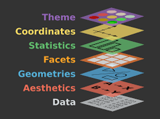
Figure 3.21: Anatomy of ggplot2
3.4.2 One Numeric Variable
You can plot a histogram of the numeric variable to see its distribution, such as the spread, the peak, symmetry, and flatness. If your concern is robust statistics, make a box plot instead.
3.4.2.1 Histogram
Let’s redraw the histogram in Figure 3.1 using ggplot2. The first line is the data layer that specifies the data source, and it must be a data frame (or tibble), e.g., iris. The aesthetic option designates the x-axis for Sepal.Width. The second line is the geometry of the graph. For a histogram, the function name is geom_histogram(). Here is the bare minimum of a ggplot2 histogram:
`stat_bin()` using `bins = 30`. Pick better value `binwidth`.
Figure 3.22: ggplot2 Histogram.
If you see this message: “stat_bin() using bins = 30. Pick better value binwidth”, R just informs you that 30 bins was used by default. You can ignore it or specify a new binwidth value.
It is always a good idea to give the graph a title at the top so people know what the key message is. Equally important are the x- and y-labels. The function labs() can do the job. By default, the title is left-justified. To center it, see the last line and the comment above it.
# Overwrite default x-/y-label and titleggplot(data=iris, aes(x=Sepal.Width)) +geom_histogram() +labs(x="Sepal Width", y="Count", title="Histogram of Sepal Width") +# hjust = 0.5 means the horizontal adjustment is the midpoint.theme(plot.title =element_text(hjust =0.5))
`stat_bin()` using `bins = 30`. Pick better value `binwidth`.
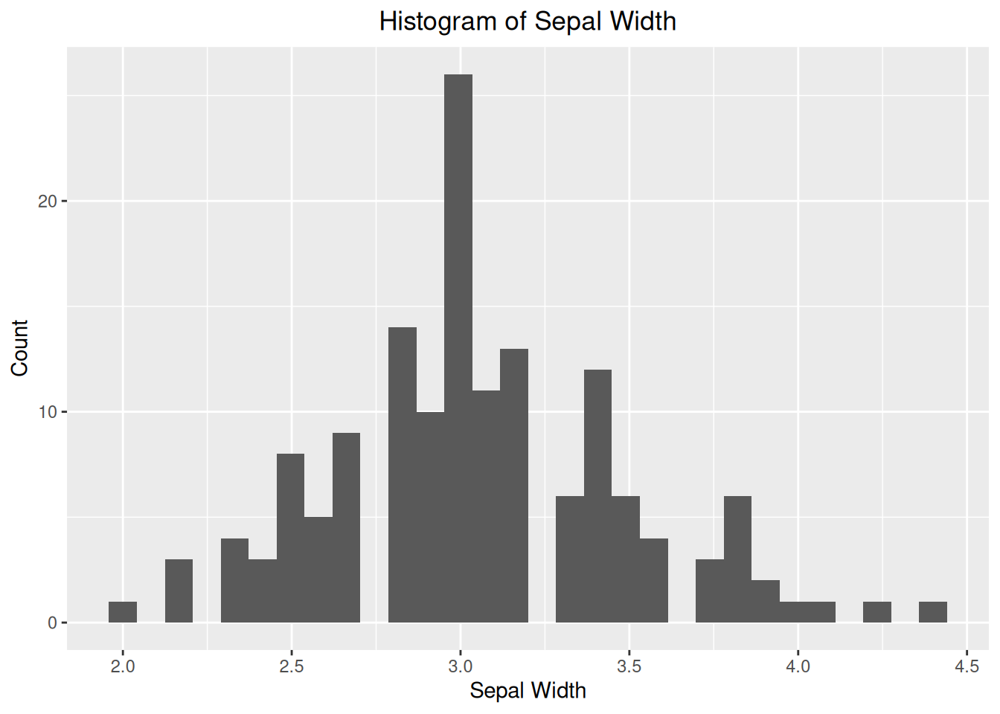
Figure 3.23: A ggplot2 Histogram with customized labels and title.
Change the fill color and border color. It can be done by providing additional parameters to the geom_histogram().
# fill = filled color# color = border colorggplot(data=iris, aes(x=Sepal.Width)) +geom_histogram(fill="skyblue", color ="white") +labs(x="Sepal Width", y="Count", title="Color Options") +# hjust = 0.5 means the horizontal adjustment is the midpoint.theme(plot.title =element_text(hjust =0.5))
`stat_bin()` using `bins = 30`. Pick better value `binwidth`.
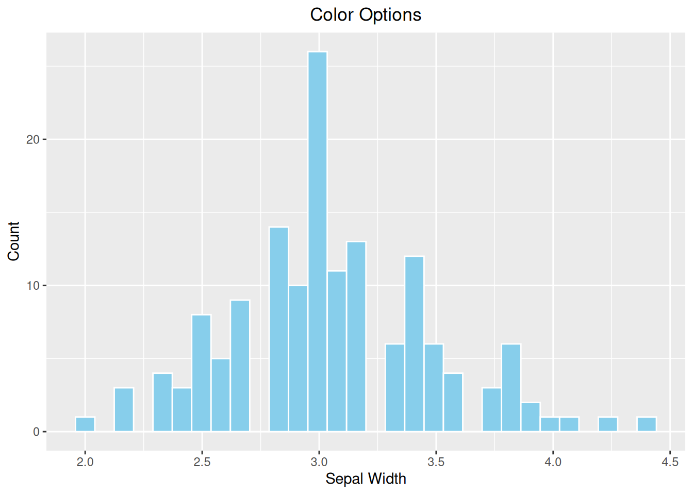
Figure 3.24: A ggplot2 Histogram with a customized color.
The bin width of a histogram is calculated automatically by ggplot2 according to the range of x. You can use the breaks parameter to overwrite it.
# breaksggplot(data=iris, aes(x=Sepal.Width)) +geom_histogram(fill="skyblue", color ="white", breaks=seq(2,4.5,by=0.1)) +labs(x="Sepal Width", y="Count", title="`breaks` option") +# hjust = 0.5 means the horizontal adjustment is the midpoint.theme(plot.title =element_text(hjust =0.5))
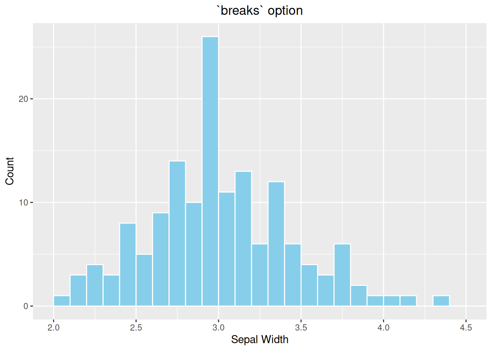
Figure 3.25: A ggplot2 Histogram with a non-default bin width.
Optional topic
As you might notice, each of the four histograms occupies the entire plotting area instead of displaying in a 2x2 grid as in Figure 3.1. It is because ggolot2 does not work with par(mfrow(2,2)). To divide the plotting area into a grid that is compatible with ggplot2, use the patchwork package. Use the menu option Tools\(\rightarrow\) Install Packages to install it.
Another new concept is that a graph can be stored in a variable so it can be displayed later in the grid. In the example below, the four histograms above are initially stored in variables, p1, p2, p3, and p4. See the example below:
require(patchwork)# Defaultp1 <-ggplot(data=iris, aes(x=Sepal.Width)) +geom_histogram()# With labels and titlep2 <-ggplot(data=iris, aes(x=Sepal.Width)) +geom_histogram() +labs(x="Sepal Width", y="Count", title="Histogram of Sepal Width") +# hjust = 0.5 means the horizontal adjustment is the midpoint.theme(plot.title =element_text(hjust =0.5))# fill = filled color# colour = border colorp3 <-ggplot(data=iris, aes(x=Sepal.Width)) +geom_histogram(fill="skyblue", color ="white") +labs(x="Sepal Width", y="Count", title="Color Options") +# hjust = 0.5 means the horizontal adjustment is the midpoint.theme(plot.title =element_text(hjust =0.5))# Change the number of binsp4 <-ggplot(data=iris, aes(x=Sepal.Width)) +geom_histogram(fill="skyblue", color ="white", breaks=seq(2,4.5,by=0.1)) +labs(x="Sepal Width", y="Count", title="`breaks` option") +# hjust = 0.5 means the horizontal adjustment is the midpoint.theme(plot.title =element_text(hjust =0.5))# Arrange them in a 2x2 grid# '+' places plots next to each other, '/' stacks them(p1 + p2) / (p3 + p4)
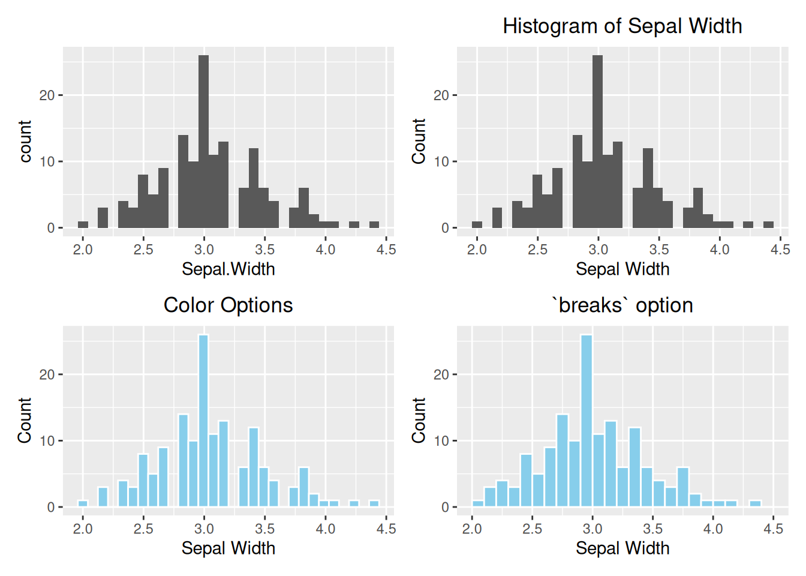
Figure 3.26: ggplot2 Grid System by patchwork. Top left: Default (bare minimum). Top right: with labels and title. Bottom left: change the color. Bottom right: change the number of bins.
3.4.2.2 Box plot
The anatomy of a box plot can be found in Figure 3.3. The geometry function of a box plot is geom_boxplot(). Unlike a histogram, the numeric variable is mapped to the y-axis for a vertical box plot. If you want a horizontal box plot, map the numeric variable to the x-axis, and don’t forget to specify an x-axis label.
Figure 3.27: box plot using ggplot2. Top left: default (bare minimum). Top right: with y-label and title. Bottom left: change color. Bottom right: horizontal box plot.
3.4.3 One Categorical Variable
3.4.3.1 Bar Plot
Here we will show how to make a bar plot and a pie chart using ggplot2.
require(patchwork)# Defaultp1 <-ggplot(data=iris, aes(x=Species)) +geom_bar()# With labels and titlep2 <-ggplot(data=iris, aes(x=Species)) +geom_bar() +labs(x="Species", y="Count", title ="A Barplot of Species") +theme(plot.title =element_text(hjust =0.5))# Color optionp3 <-ggplot(data=iris, aes(x=Species)) +geom_bar(fill="skyblue", color="blue") +labs(x="Species", y="Count", title ="A Barplot of Species") +theme(plot.title =element_text(hjust =0.5))# Horizontal barplotp4 <-ggplot(data=iris, aes(y=Species)) +geom_bar(fill="skyblue", color="blue") +labs(y="Species", x="Count", title ="A Horizontal Barplot of Species") +theme(plot.title =element_text(hjust =0.5))(p1 + p2)/(p3 + p4)
Figure 3.28: Barplot using ggplot2. Top left: default (bare minimum).
3.4.3.2 Pie Chart
Here’s a curve ball. You may give an impression that ggplots is an upgrade. Plotting a pie chart should be a piece of cake. The fact is NO.
Despite the disappointment, it is worth seeing how a pie chart can be plotted using the foundational building-block functions. To give you a heads-up, ggplot2 view a pie chart as a twisted bar plot. There is an internal logic to justify such a view, but we will not discuss it in detail.
Suppose we want to create a pie chart like the one below:
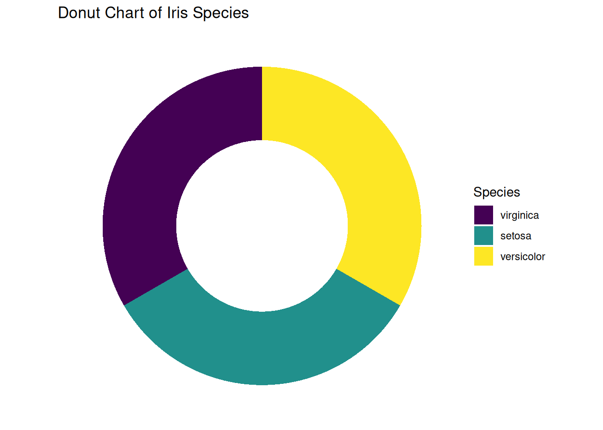
Figure 3.29: Pie chart or a donut chart
Here we will walk through each of the intermediate steps until getting the final pie chart.
Let’s begin with a stacked barplot, where the bars are stacked up into a single column, and the fill color is an attribute to distinguish different iris species (fill=Species). The stacked bar is placed at the position 2 units on the right from the origin (aes(x=2)), but the exact position does not matter.
Now, use your imagination to picture that the stacked bar is bent into a ring. Does it look like the pie chart in Figure 3.30? One way to “bend” it in ggplot2 is to change the x-y Cartesian coordinate system to the polar (circular) coordinate system in which a point is characterized by two parameters: the distance from the origin (\(r\)), and the angle (\(\theta\)) from the horizontal polar axis in a counter-clockwise direction.
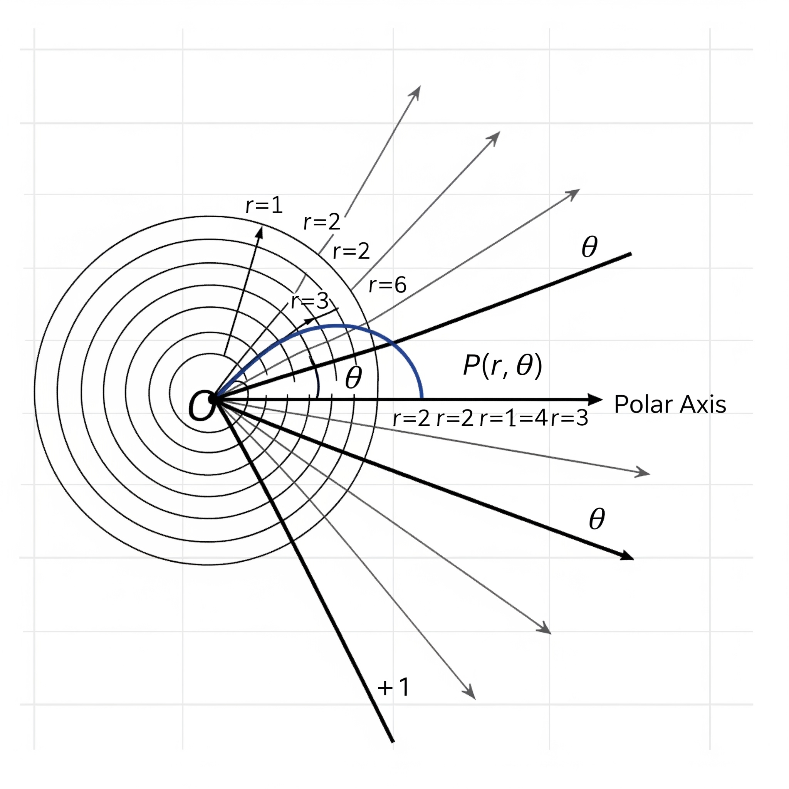
Figure 3.31: Polar Coordinate. (generated by Gemini)
By adding this line coord_polar(theta="y", start = 0) in the code below, it transforms the height of the bar for each species into an angle (\(\theta\)) in the polar coordinate, where the zero position is the 12 o’clock (start = 0). In this example, one third of the samples is setosa. As such, the angle \(\theta\) is \(360^{\circ}\times\frac{1}{3}=120^{\circ}\). If the proportion is a quarter, the angle \(\theta=360^{\circ}\times\frac{1}{4}=90^{\circ}\).
Figure 3.32: A Piechart by changing to the polar coordinate system.
The final step is to open a hole in the pie chart if you like, for aesthetic reasons. But this modification is optional.
ggplot(iris, aes(x =2, fill = Species)) +geom_bar(width =1, stat ="count") +coord_polar(theta ="y", start =0) +# This is the key part that creates the holexlim(0.5, 2.5) +labs(title ="Donut Chart of Iris Species")
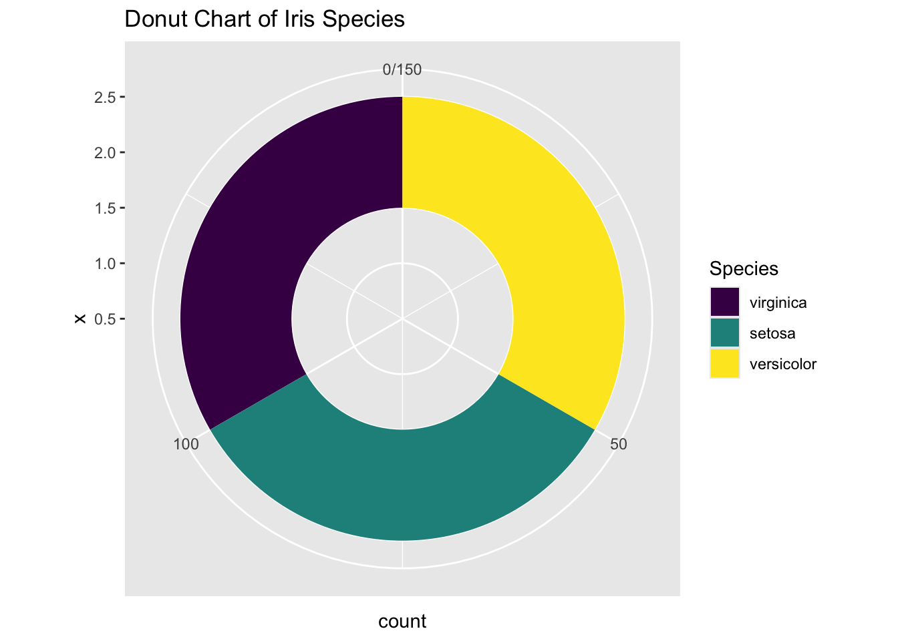
Figure 3.33: A Piechart using ggplot2.
If you prefer to have a clean background, add the line theme_void(). Finally, here’s the desired pie chart. What a journey!
ggplot(iris, aes(x =2, fill = Species)) +geom_bar(width =1, stat ="count") +coord_polar(theta ="y", start =0) +# This is the key part that creates the holexlim(0.5, 2.5) +theme_void() +labs(title ="Donut Chart of Iris Species")
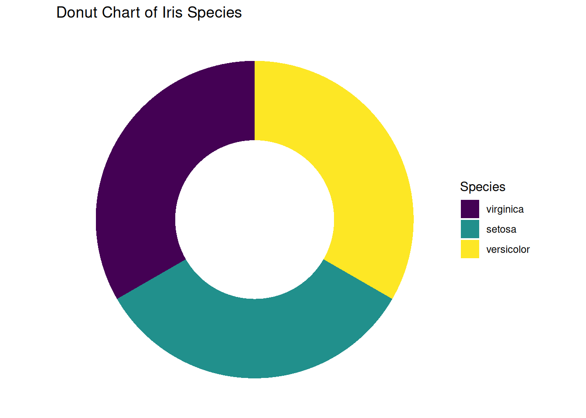
Figure 3.34: Piechart using ggplot2 without no background.
3.4.4 One Categorical Variable and One Numeric Variable
3.4.4.1 Side-by-side Box Plot
Here you want to compare the robust statistics among different species.
Here, you want to compare the average Sepal.Length among iris species. As discussed above, you calculate the averages and store them in a separate table. It uses pipe, group_by, and summarize concepts discussed in Section 2.3.11.
# A tibble: 3 × 2
Species mean_sepal_length
<ord> <dbl>
1 virginica 6.59
2 setosa 5.01
3 versicolor 5.94
And then, you can plot the summary table. The geometry function is geom_bar(stat = "identity"). The stat = "identity" parameter tells the geom_bar() function to set up the height of the bars according to the face value of mean_sepal_length.
The calculation of the error bar (i.e., the standard error se) requires standard deviation and sample size. Once se is calculated, it can be used to calculate the minimum (lower) and maximum (upper) of the error bar.
iris_summary2 <- iris %>%group_by(Species) %>%summarize(mean_sepal_length =mean(Sepal.Length),N=n(),se=sd(Sepal.Length)/sqrt(N)) %>%# add the y minimum and y maximum columnsmutate(ymin = mean_sepal_length - se,ymax = mean_sepal_length + se)iris_summary2
# A tibble: 3 × 6
Species mean_sepal_length N se ymin ymax
<ord> <dbl> <int> <dbl> <dbl> <dbl>
1 virginica 6.59 50 0.0899 6.50 6.68
2 setosa 5.01 50 0.0498 4.96 5.06
3 versicolor 5.94 50 0.0730 5.86 6.01
# A tibble: 3 × 6
Species mean_sepal_length N se ymin ymax
<ord> <dbl> <int> <dbl> <dbl> <dbl>
1 virginica 6.59 50 0.0899 6.50 6.68
2 setosa 5.01 50 0.0498 4.96 5.06
3 versicolor 5.94 50 0.0730 5.86 6.01
Incorporate the SE into a line plot.
ggplot(iris_summary3, aes(x=Species, y=mean_sepal_length, group =1)) +geom_line(color ='skyblue') +geom_point(size =3, color ='skyblue') +geom_errorbar(aes(ymin = ymin, ymax = ymax), width =0.1, linewidth =1) +labs(x="Species", y="Sepal Length", title ="Line Plot with Erorr Bar") +theme(plot.title =element_text(hjust =0.5))
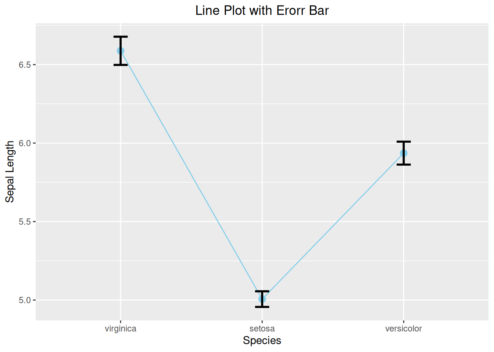
Figure 3.38: A line plot with error bar.
3.4.4.5 Overlapping Histogram
Like the base R side-by-side histogram, you will set the transparency to 0.5 and bin width to 0.25. Note that there is no need to care about the x- and y-limits of ggplot2.
Figure 3.41: Visualizing the relationship between two numeric variables using a scatter plot.
If you want to emphasize their linear relationship, you can do this convincingly by adding a regression line on top of the scatter plot. ggplot2 spares you the effort of creating a linear model in base R. Instead, it can be done by adding the geom_smooth(). You tell geom_smooth(method = "lm", se = FALSE, color = "red") to use a linear method (lm) for smoothing the data points. See the code below:
ggplot(iris, aes(x=Sepal.Width, y=Sepal.Length)) +geom_point() +geom_smooth(method ="lm", se =FALSE, color ="red") +labs(x="Sepal Width", y="Sepal Length", title ="Scatter Plot with the Regression Line") +theme(plot.title =element_text(hjust =0.5))
`geom_smooth()` using formula = 'y ~ x'
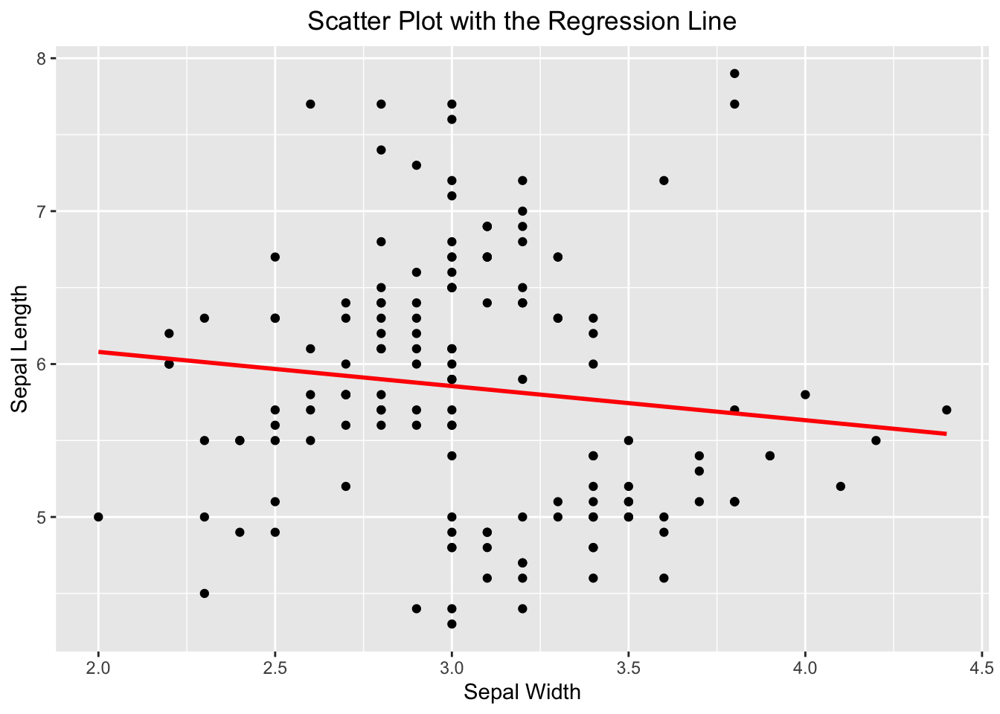
Figure 3.42: A scatter plot overlaid with a regression line.
If you see this message “geom_smooth() using formula = ‘y ~ x’”, it is harmless and informational. ggplot2 is just to let you know what the response and predictor are used by geom_smooth() in creating the regression line.
3.4.7 Multipanel Scatter Plot
Oftentimes before multiple linear regression, it is recommended to visualize the relationship between the response variable and the independent variables pairwisely, or the linear relationship between independent variables. The latter is important, as it may cause the collinearity issue if independent variables are linearly correlated.
A multipanel scatter plot can do this. However, ggplot2 does not have a geometry function for it. The simplest way is to use the ggpairs() function provided by the GGally package, which requires installation if you have not done so.
Suppose you are interested in the pairwise relationship between all numeric variables in iris. It can easily be done using the ggpairs() plot function. Color is the attribute used to distinguish species. progress = FALSE is to suppress the printing of the progress bar.
This is a big chapter that has discussed an array of plot functions both from base R and ggplot2. It is more like a cookbook of various visualization recipes. So, instead of listing all the functions here, it is helpful to list several useful resources that you can fine-tune the graphs yourselves.
pch
If you type help(pch) at the console, R shows the pch section of the help page for points. Below is a snapshot of pch values and the corresponding plotting characters:
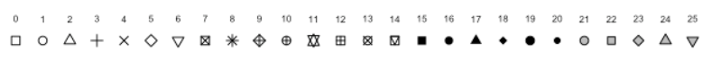
Figure 3.44: pch values
Color
R supports a large number of colors and palettes. R Graph Gallery is a great resource to see what choices are available and their names.